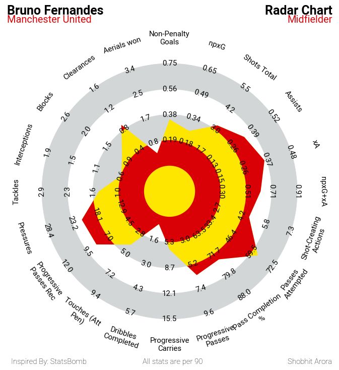

Radar Charts Tutorial
A radar chart can be used to check different attributes of a player at once.
These radar charts can also be used to compare two or more players by plotting their graphs together.
The data for these charts have been taken from fbref.com. The website has a table which looks the one below:
The data has been scraped from the table using the BeautifulSoup library, so the data can be acquired easily by just putting in the url of the player page.
The idea of this chart comes from a Python library called mplsoccer. The documentation can be read here
The radar chart below gives the 20 attributes of Bruno Fernandes. The highest values has been taken by comparing the same attributes among midfielders from the top 5 European leagues.
The Jupyter notebook with the all the code can be found at my GitHub here